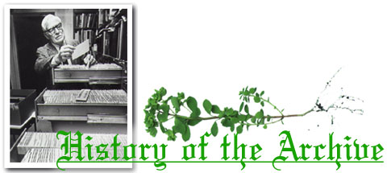
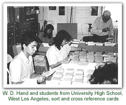
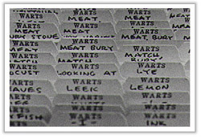

| | Home | | | About the Archive | | | How To Search the Archive | | | Credits | | | Disclaimer | |
|

Wayland D. Hand (1907-1986), students, and colleagues began to amass data for the Archive of American Folk Medicine in the 1940s. The project originated with Hand's editing of materials that eventually were published as two volumes of The Frank C. Brown Collection of North Carolina Folklore (Duke University Press, 1961, 1964). Hand extracted information from the writings of medical practitioners dating to the late 18th century. He also obtained data from scientific journals, popular magazines, newspapers, and historical sources (diaries, travel accounts, treatises on plants and animals) over the past 200 years. More than 3,200 published works served as sources for archive holdings. Other materials derive from field collections in archives at UCLA, Detroit University, Pan American University, Berkeley, Sacramento State, and the University of Oregon. While most of the information concerns ethnic and regional groups in the U.S., there is also data from Europe, Latin America, and parts of Africa and Asia. When the archive was officially opened in 1984, Wayland Hand was congratulated by many dignitaries, including the Mayor of Los Angeles, Tom Bradley; the Surgeon General of the United States, Dr. C. Everett Koop; and the Director of the World Health Organization, Dr. Halfdan T. Mahler.  The information that Hand and his cadre of assistants extracted was compiled onto 4x6" cards. These were organized according to disease, injury, or condition. Different therapies were filed alphabetically with each illness. Duplicate cards were needed for purposes of cross referencing, creating nearly one million records in order to access the database of about 210,000 distinct treatments. Michael Owen Jones, a professor of folklore and history at UCLA, realized several years ago the inherent problems of a manuscript archive regarding storage and access. Recent changes in computer technology presented the perfect opportunity to make this invaluable collection readily available to scholars and medical practitioners. Jones applied for and received a grant from the National Library of Medicine to automate the database.
|